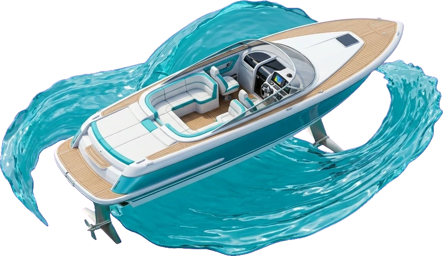

FIND SOMEONE TO TAKE YOU THERE
Phuket Private Hydrofoil Charter — Cruise limestone karsts, emerald lagoons, and coral reefs with verified local skippers.

Phuket Private Hydrofoil Charter — Cruise limestone karsts, emerald lagoons, and coral reefs with verified local skippers.

Connect directly with certified yacht captains in Paris, London, Dubaï, and Phuket.